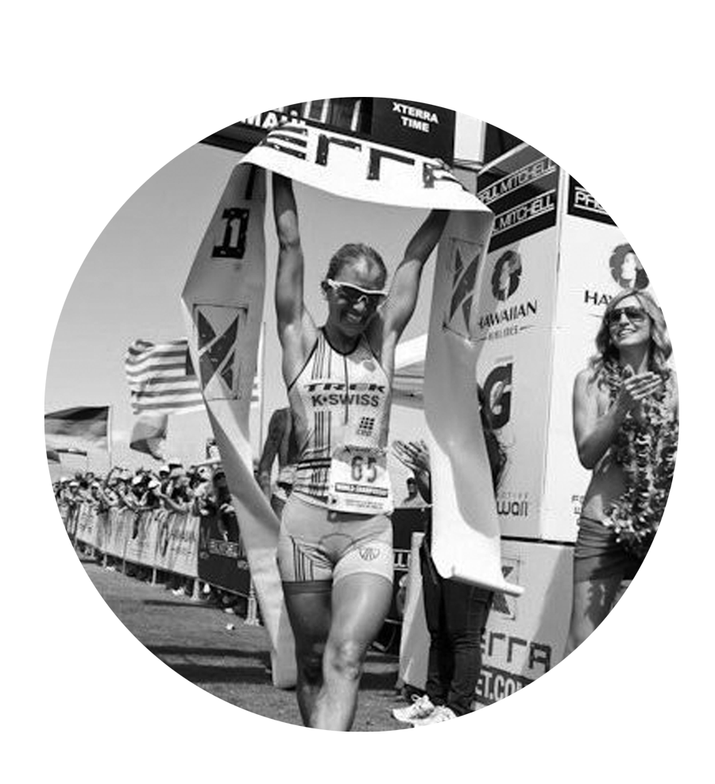

10 years experience in consumer genomics and biotech startups. Diagnomics; MyGenomebox; University of California, Irvine Laboratory. Michelle is a respected biohacker and influential member of the under 30 Korean American business community.

18+ years public/ private equity focus emerging biotechnology. Nasdaq RPTP; INO; TSX CRH; TSX-V ABRA. Karl is an amateur triathlete. He has spent 3 decades training and learning about the human body.

Founder and CEO of Eone Diagnomics Genome Center (KOSDAQ EDGC) South Korea. Eone-Diagnomics; Diagnomics: Sequenom; Genaissance Pharmaceuticals. Post-Doctoral Fellowship Harvard Medical School. Ph.D. City of Hope National Medical center. Visiting professor Incheon National University
14+ years of experience providing strategic insights and actionable information to life science companies. lllumina Arogyam Market Intelligence Keck Graduate Institute. Aruna helps life sciences companies make informed strategic decisions based on actionable market intelligence.
Kate is Ph.D. Student with 8+ years of experience in the medical industry and social media marketing for science and health companies. Harvard Medical School ; Quest Diagnostics, John Hopkins Children Hospital , Comprehesnive Hematoma. Master of Science in Biometical Sciences from Liberty University ; BS from St. Petersburg in Biophysics and Biology ; Medical Physiology from Harvard Medical School.
5+ years heavily involved with technology management, development, and implementation. Matt is working with the executive team to conceptualize and execute mobile tools designed to bring customers together, present them with their personalized data, and introduce them to potential products and communities that can bolster their wellness journey.

Lesley is a 6X World Champion in the sport of triathlon and has been competing since the tender age of 14. In addition to her triathlon career, she works in the American film industry as a screenwriter and producer. She has a deep understanding of the human body reacts to stress and inflammation. She successfully overcame her battle with Lyme disease and continues to inspire her students, colleagues and fans around the globe.

Dr. Pruski is a Chiropractor at Joint & Spine Center in Huntsville, Texas. Over 30 years of extensive experience in chiropractic care and regenerative medicine. Has been involved with the application of regenerative medicine/biologic therapy for 12 years. Winner in The Huntsville Item’s BEST OF Awards 2020. Top Chiropractor 2020 by Texas Magazine. Dr. Pruski is also active with other community businesses such as the Aspire Hospital, 3R (Regenerative Repair & Relief) Regenerative Medicine Center, and Sam Houston State University’s College of Osteopathic Medicine.

CEO Revive Biotech CBD pain management company; Co-founder of Oregon Valley Organics Sustainable Hemp Solutions; 12 years of college professorship and scholarship. Fulbright scholar appointed by the U.S. State Department Secretary of Education to Sam Houston State University. Doctorate in Data, Privacy Literacy, & Policy. Dr Slimane is passionate about improving the quality of human life.

Gordon is CEO of UCAP Power, Inc. He has 18+ years experience building extraordinary teams, revenues & profits. He has expertise in building start-ups, fund raising and M&A.
Tesla (Maxwell division); Sales Director Vuforia AR PTC; Sentab Advisory Board; Received Masters from Pepperdine University; BSEE Milwaukee School of Engineering.
Tesla (Maxwell division); Sales Director Vuforia AR PTC; Sentab Advisory Board; Received Masters from Pepperdine University; BSEE Milwaukee School of Engineering.

30+ years of consulting ,venture capital and capital markets experience. PWC; Forbes Medtech; PsyBio Therapeutics Corp.
Our Mission in Action
Moss is a disrupter in the consumer healthcare space offering personalized health, anti-aging and wellness offerings guided by genomic, microbiome, and epigenome data